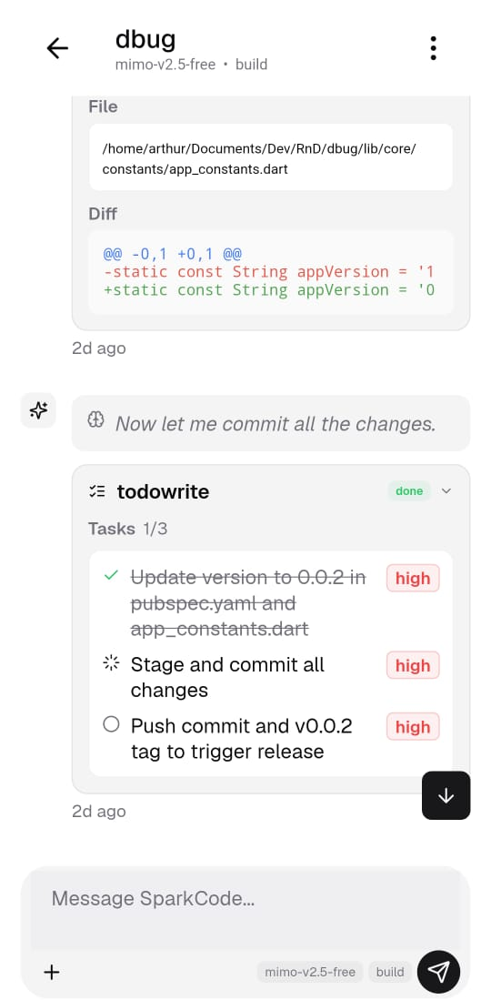
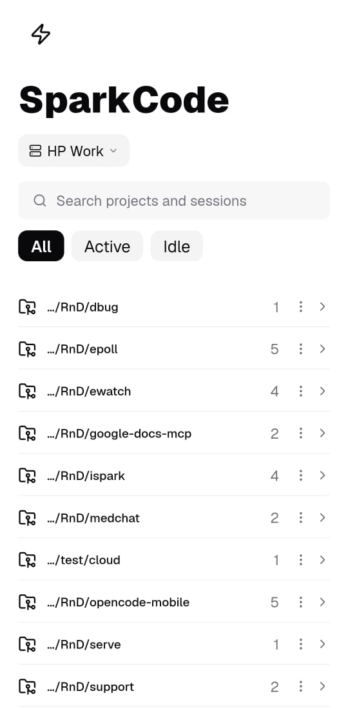
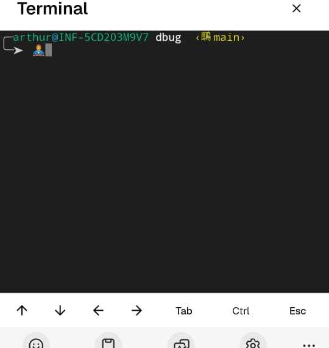
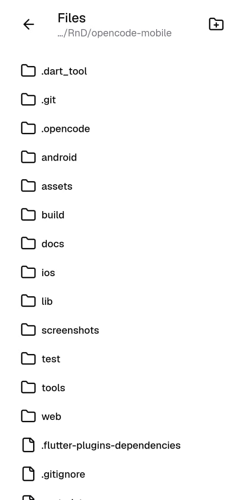
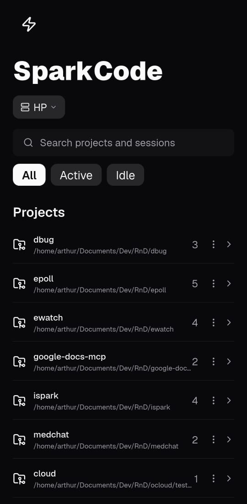

Chat with your AI, review diffs, approve permissions,
and access a full terminal — all from your phone.
No credit card required. Open source.

Trusted by developers using
Effortless AI assistance for developers on the move.
Run opencode on your machine. Spark connects to it over your local network or the internet.
opencode serve --port 4096
Open the app, go to settings, and enter your server details. That's it.
Host: 192.168.1.100
Port: 4096
Password: ****
Chat with AI, review diffs, approve permissions, or open a terminal — all from your phone.
Every feature built for the way you work.
Watch as your AI streams responses, shows reasoning, and executes tools — all visible as they happen.
Organized by project with smart filters. Jump between workspaces instantly.

Access files, terminal, models, and agents from a single session menu.

Navigate files and folders with a clean, familiar interface. View code with syntax highlighting.

Switch between themes to match your preference.

Stream responses in real-time. See text, reasoning, and tool calls as they happen.
Bash, read, edit, grep, and more — expand inline to see structured output and diffs.
Approve or reject file edits and shell commands with a single tap, from anywhere.
PTY-backed terminal with arrow keys, Tab, Ctrl, and Esc — right on your phone.
Sessions grouped by project. Search, filter by active or idle, switch between worktrees.
Switch between models and agents on the fly. Server defaults auto-detected.
Spark is a mobile app that connects to a running opencode server. It lets you chat with AI, review code diffs, approve permissions, and access a full terminal — all from your phone.
Yes. Spark is a client that connects to opencode. You run the server on your machine (or a remote server) and connect Spark to it over your local network or the internet.
Yes. Spark is free and open source. You only need an opencode server and your own API keys for the AI providers you want to use.
Yes. Spark works with any model that opencode supports — including Claude, GPT, Gemini, and more. You bring your own API keys.
Yes. As long as your opencode server is accessible (via port forwarding, VPN, or a public URL), Spark can connect to it from anywhere.
Connect Spark to your opencode server and start building.